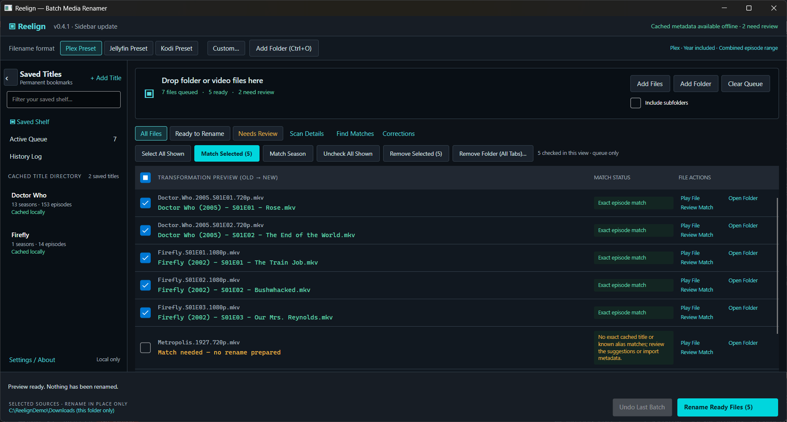
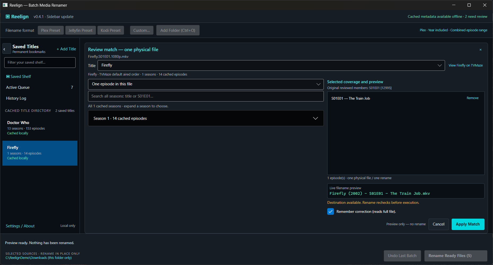
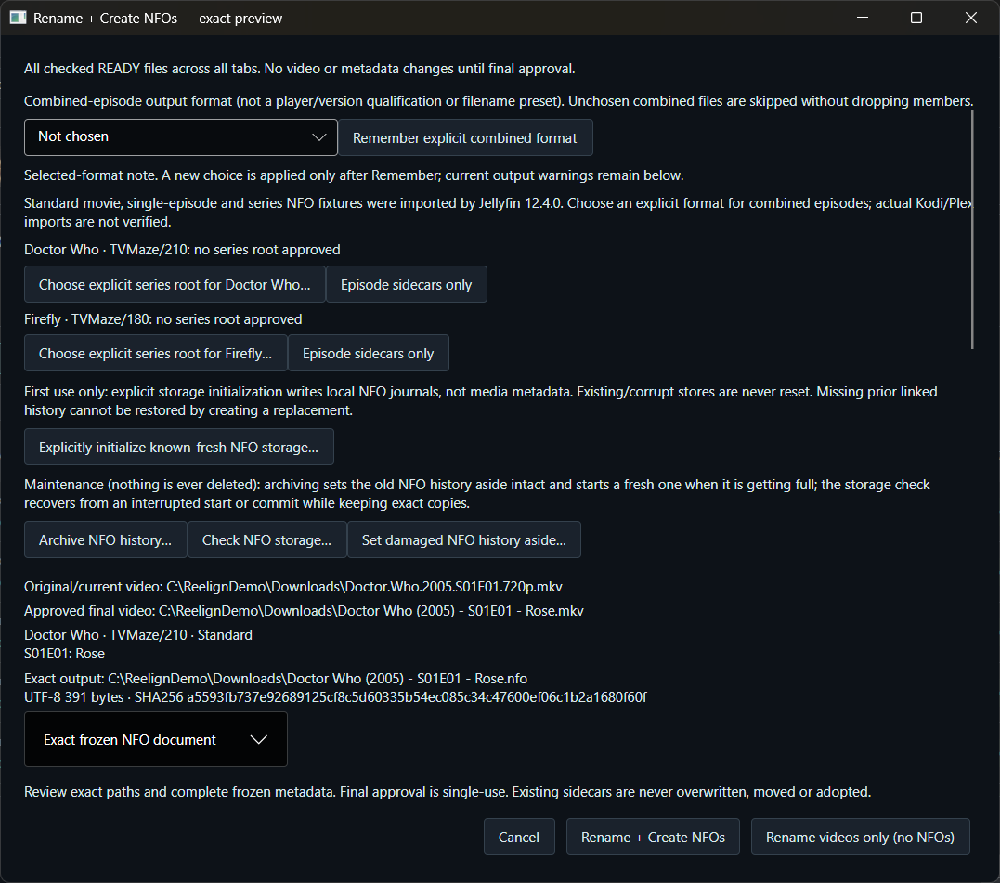
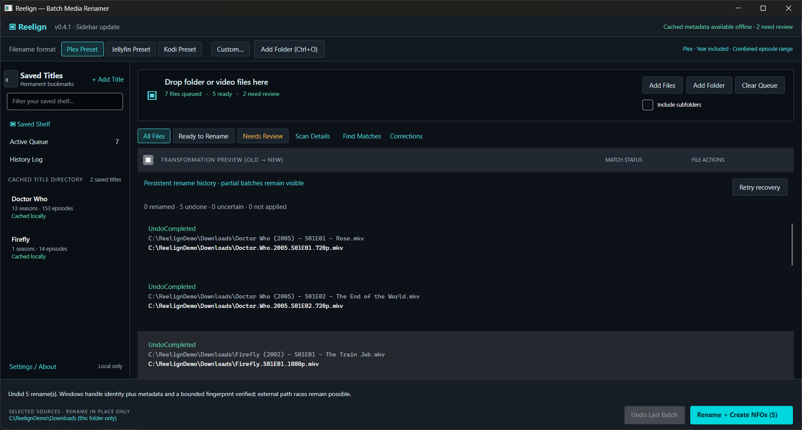

See every new filename before anything changes.
Reelign is a free Windows app that turns release-style names like Show.S01E01.1080p.WEB-DL.mkv into clean ones. You review the proposed names first. Every batch is recorded, and Undo puts the originals back.
Portable and ready to run. Reelign includes its own .NET runtime. No separate .NET installation, setup wizard, or additional downloads required.
Free, no accounts, no paid features. Windows 10/11 x64. Public beta: the app is not code-signed, so Windows SmartScreen may warn.
Illustration: files drift in, then get sorted the way Reelign sorts them.
Try a batch yourself
Rename the ready files, then undo the batch. The file that matches two shows is left out and waits for your decision, the same as in the app.
This demo is a simulation in your browser. It does not touch any files.
The real app, on disposable test files
These are screenshots of Reelign running on Windows. The files are placeholders, and no personal paths or accounts appear.
Old name and new name, side by side
Matched files show the proposed name next to the current one. Nothing is renamed until you choose to rename, and files that need your decision stay out of the batch.

Pick the episode yourself when it is unclear
Review Match lists the seasons and episodes. Choose the one the file contains and watch the filename preview update before you apply it.

NFO files are optional and fully previewed
If you turn on NFO sidecars, you see the exact paths and the full contents first. Existing NFO files are never overwritten. This works on local NTFS drives only.

Every batch goes in History, and Undo restores it
Undo puts the original names back. Here, five renames have been undone.

Watch it work
Screen recordings of the real app on disposable test files. Only the captions, zooms and speed-ups are added afterwards; each speed-up is labelled on screen. The folder picker is blurred where it shows the PC name.
How a batch goes
The same four steps every time, so nothing surprising happens to your library.
Add your files
Add files or a folder, or drag them in. Subfolders are optional.
Let it match
Titles come from TVmaze for TV and TMDB for movies. Ambiguous ones wait for you.
Review the previews
Check the new names. Fix any match, or leave it out of the batch.
Rename, or undo
Rename the ready files. If you change your mind, Undo restores the originals.
What Reelign will and will not do
A renamer touches your whole library, so the limits matter as much as the features.
It will
- Rename files in place. A combined episode file stays one file.
- Show a preview first, including collision checks.
- Keep a journal of every batch so it can be undone.
- Remember your corrections for next time.
- Offer naming presets for Plex, Jellyfin and Kodi, or your own templates.
It will not
- Guess between two possible titles. It asks.
- Rename anything you have not approved.
- Overwrite an existing NFO file.
- Write NFO files to network shares. That stays off until it is proven safe.
- Show ads or ask you to sign in.
Made for the media servers you already run
Reelign has naming presets for the three common servers. NFO import is checked one server at a time, and this is where each stands.
Jellyfin
Reelign's NFO files imported correctly in Jellyfin 12.4.0.
Plex
The naming preset exists. NFO import has not been checked yet, so no claim is made.
Kodi
The naming preset exists. NFO import has not been checked yet, so no claim is made.
Reelign is an independent app. It is not affiliated with or endorsed by Plex, Jellyfin or Kodi, whose names belong to their owners.
Free, and clear about what it contacts
Reelign is free. There are no paid features and no accounts. Your queue, rename history and settings stay on your PC.
It needs the internet only to look up the show or movie title (and its poster) so it can propose a name.
- TV lookups go to TVmaze and need no key.
- Movie lookups go to TMDB and use your own free API Read Access Token.
- Poster images come from the same two services. Nothing else is contacted by the app: no analytics and no usage reports.
Questions
Can I download it?
Yes. The public beta is a portable ZIP on the GitHub release page, with its SHA-256 checksum. Unzip it anywhere and run Reelign.Desktop.exe; there is no installer. Please try it on copies of your media first.
Why is the download approximately 46 MB?
Reelign includes the .NET runtime it needs to run. That makes the download a little larger, but everything is included. Just extract the ZIP and launch Reelign. No separate .NET installation required.
What do I need to run it?
A 64-bit Windows PC. The app is self-contained, so you do not install .NET separately. The beta is not code-signed (a certificate costs money and Reelign is free), so Windows SmartScreen may show "Windows protected your PC". To continue, choose More info, then Run anyway. To confirm the file is the one we published, compare its SHA-256 with the checksum on the release page: in PowerShell, Get-FileHash .\Reelign-beta-2-win-x64.zip.
Do I need an API key?
Not for TV shows. For movies you need your own TMDB API Read Access Token, which is free from TMDB. It stays in memory for the session unless you choose to remember it, and then Windows protects it for your account.
Is it safe for my library?
Reelign previews every change, keeps a journal and offers Undo, but no tool should be your only copy. While it is in beta, try it on copies first and keep your usual backups. If a batch is interrupted, Reelign blocks uncertain results instead of guessing.
Does it work with Plex and Kodi?
The naming presets follow their conventions. Verified NFO import is so far confirmed only for Jellyfin, and the Plex and Kodi checks are still to do.
Will it stay free?
Yes. There are no paid features planned for Reelign itself.
Try the public beta
Download the ZIP, try it on copies of your media, and tell us what you find. Say which media server you use and roughly how many files you rename.
Download the beta for Windows Report a problem